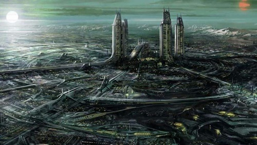
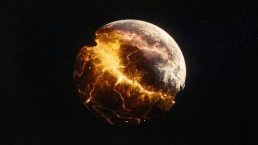
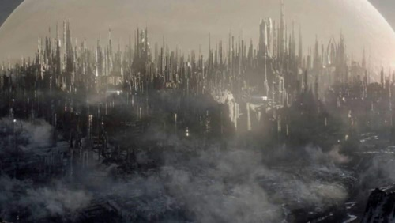
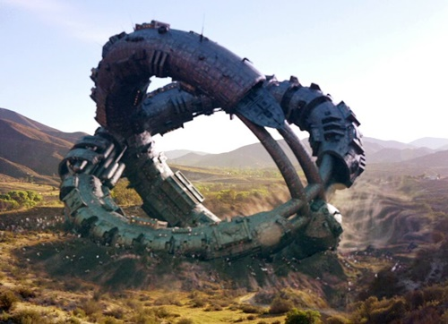
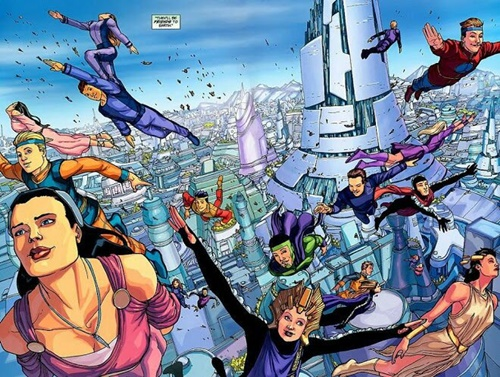

Origem do Planeta Krypton
Krypton era o planeta natal do nosso querido Superman e de sua prima, Supergirl, no universo fictício da editora DC Comics. Somente Kal-El e sua prima Kara Zor-El sobreviveram à explosão do núcleo do planeta, ao serem enviados por Jor-El e Alura Zor-El para a Terra. Ele foi criado por Jerry Siegel e Joe Shuster, tendo sua primeira aparição na HQ Kal-El #1, lançada no verão de 1939, mesma HQ que o escoteiro aparece pela primeira vez.
Krypton, ao ser descoberto, ainda não possuia nome, havia criaturas estranhas e era um planeta bem hostil. Os primeiros habitantes do planeta foram uma raça de alienigenas chamadas de Voch, liderados por um cientista que se chamava Bertron. Ele estava analisando o planeta. Bertron tinha vários escravos que eram parecidos com humanos. Contudo, os escravos eram usados como cobaias para experimentos com animais que vagavam pelo planeta, na intenção de criar super-soldados para fortalecer seu exército.
Após realizar várias pesquisas, o DNA de um bebê ganhou invulnerabilidade. Bertron juntou esse DNA com a de um animal de Krypton e, posteriormente, acabou criando um gigante super-soldado. Bertron, no entanto, batizou a criatura de Apocalypse, ou se preferir, Doomsday. Porém, Apocalypse despertou uma raiva incondicional e acabou matando Bertron e todos os cientistas que haviam no lugar.
No ataque do furioso Doomsday, escravos acabam escapando e fugindo da tão temida criatura. Eles foram obrigados a ficarem lá, pois Apocalypse havia pegado a nave e escapado do planeta. Com isso, eles estabeleceram ali colônias para se adaptarem ao novo planeta. Assim, haviam dois irmãos naquela colônia, sobreviventes do ataque de Doomsday. Contudo, se chamavam Kryp e Ton. Assim, batizaram o planeta juntando os seus dois nomes, ficando Krypton.
Destruição
O planeta natal do homem de aço se localizava na órbita de uma estrela gigante chamada de Rao, cujo o mesmo obtinha luz solar vermelha, ficava cerca de 50 anos-luz da Terra. Devido a falta de minérios no seu núcleo, o planeta ficou instável e gerou uma enorma explosão, destruindo-se por completo. Dentre os sobreviventes foram: Kal-El, Krypto, Kara Zor-El, que fugiram por naves mandadas por seus pais, e alguns prisioneiros de Fort Rozz, uma prisão fortificada de Krypton.
Com a explosão que o planeta gerou no espaço, partes do planeta voaram em direção à Terra em forma de asteróides. Os asteróides traziam consigo pedaços de kryptonita, que são as rochas restantes do planeta. A Kryptonita é extremamente letal para a raça dos Kryptonianos.
Cidades e Luas
Krypton possuia muitas cidades, sendo as principais chamadas de Kandor e Argo City. Porém, Kal-El nasceu em Kryptonópolis, uma pequena cidade que havia no planeta, distante de todas as outras. Entretanto, haviam outras, como por exemplo Vathlo, que viviam apenas kryptonianos negros, e Ankar City. O planeta Krypton possuia em sua órbita três satélites naturais, eles eram chamados de Korot, Xeno e Mitne. O satélite natural que gerava riquezas para Krypton era Korot, portador de diversos tipos de minérios importados para o planeta e servindo para criar missões de colonização no espaço, a fim de preservarem sua raça. A língua oficial de Krypton é o Kryptonês, possuindo 118 caracteres em seu alfabeto.
Bases de Krypton
Rozz: É uma prisão de segurança para criminosos extremamente perigosos, como Zod. Ela foi dada como desaparecida, devido ter sido jogada para a zona fantasma após a explosão.
Torre Atômica: Era uma base científica de Krypton. Nesse lugar, haviam cientistas que se reuniam para desenvolver novas tecnologias para o planeta.
Undersea Palace: Era a sede imperial do Rei Mar-OK e da Rainha Isia, lugar onde todo alto conselho de Krypton se reunia para conversar.
Weghtor: Era uma base cientifica e colonial lunar em Korot, lugar onde eram planejadas missões de colonização do espaço. Porém, foi atingida por um missil poderoso do homem chamado Jax-UR.
Nova Krypton
Nova Krypton é um planeta que possui cerca de 100 mil kryptonianos sobreviventes da cidade de Kandor, após a mesma ser destruída junto ao planeta. Ela foi liberta por Superman e estava sob os domínios do vilão coluano, Brainiac. Nova Krypton fica no mesmo sistema solar que a Terra orbita, mas bem distante da mesma. Esse planeta foi criado por Superman, através da tecnologia coluana que ele havia pego após derrotar Brainiac